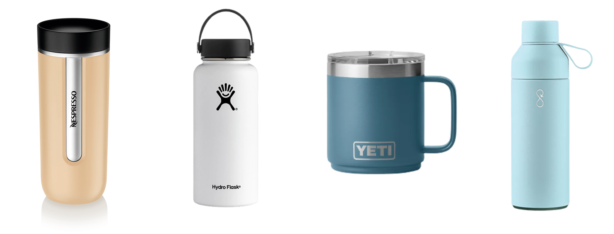
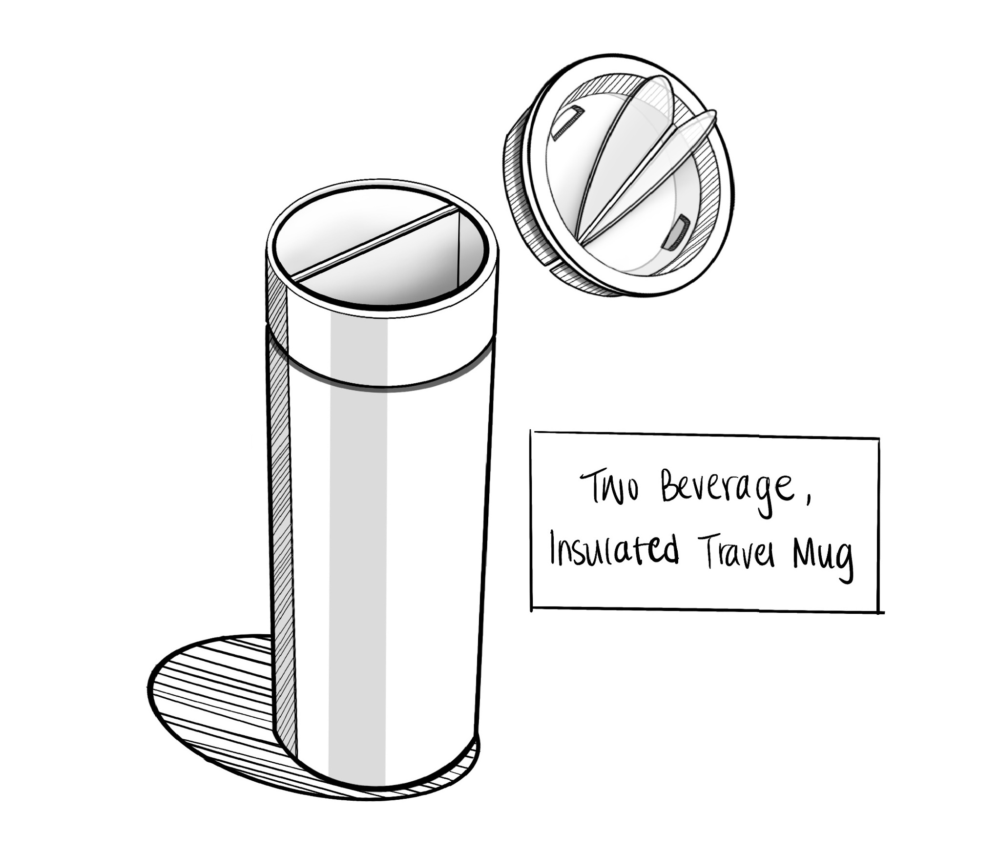
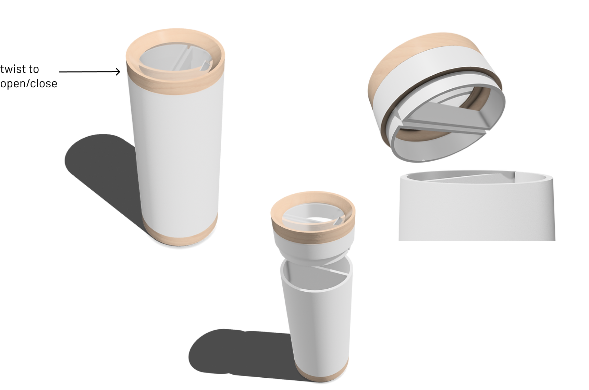

Environmental Impact of Single-Use Items
Single-use plastic water bottles
- 86% of disposable water bottles used in the
United States become garbage or litter
- 38 billion disposable water bottles end up in U.S. landfills
- The water bottling process releases 2.5 million tons of
carbon dioxide into the atmosphere annually
Single-use coffee cups
- 16 billion paper cups are used for coffee every year
- 6.5 million trees cut down
- 4 billion gallons of water going to waste
- Even though they’re paper cups, most of these cups
cannot be recycled due to its inner polyethylene plastic
film which is used to keep the coffee warm
The birth of reusable water bottles/travel mugs

Reusable Bottles on the Market
These reusable alternatives have made such a positive
environmental impact. What can I do to improve them?
Challenges posed by the
standard reusable water bottle:
- It can only hold one beverage at once.
- "I Have a hot cup of coffee, but I’m thirsty for
some water."
- Because of this, users may go buy a plastic bottle
of water
- Waterbottles can be heavy which leads to reluctance in
carrying around two reusable bottles for different beverages
Ideation
- an insulated waterbottle that splits down the middle
to hold two different beverages

3d Model

Made in Shapr3D
Pros
- Can hold two beverages at once
- Insulated walls for differing beverage temperatures
- Clear lid to see which beverage you’re consuming
Potential Issues
- A smaller sized bottle would be lighter and easier to
carry around but liquids would also be less in quantity.
- A larger sized bottle would allow higher liquid quantity
but would increase the weight and lower the convenience of travel.